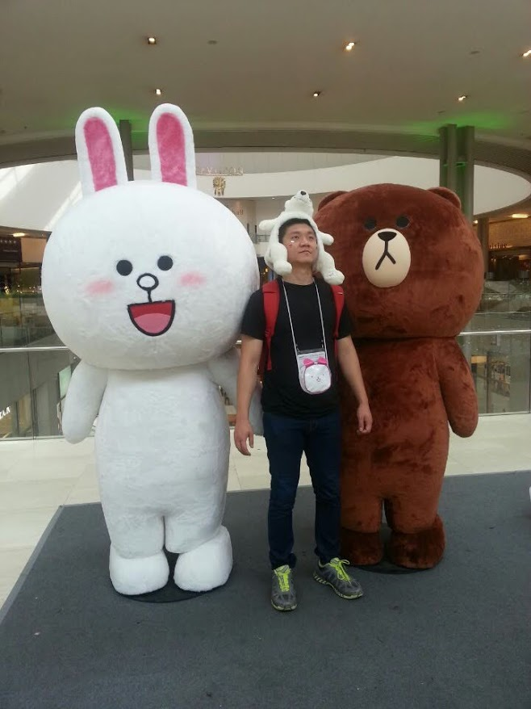
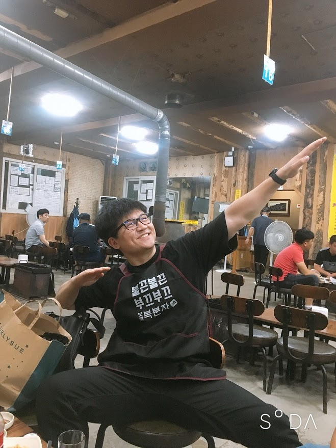
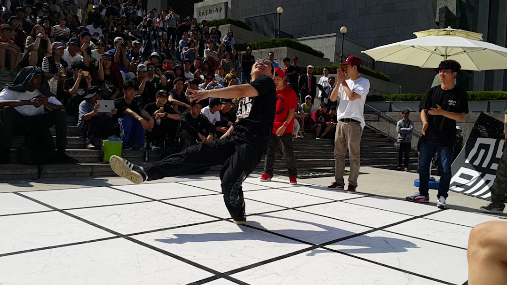
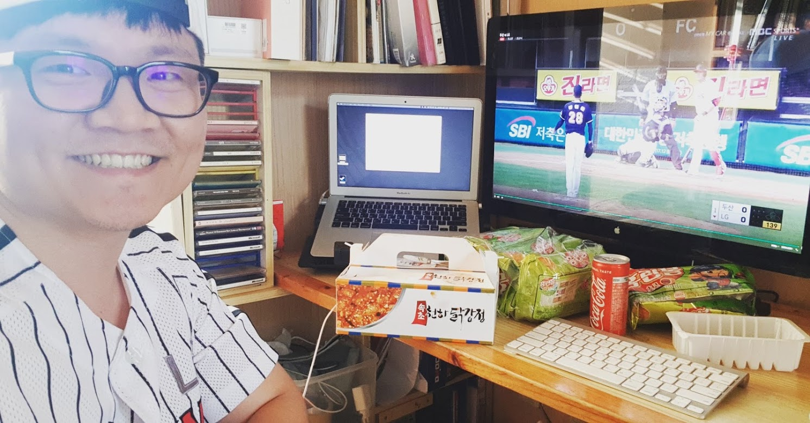
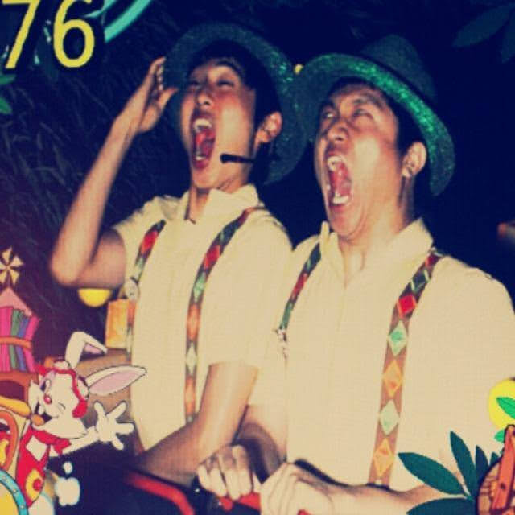
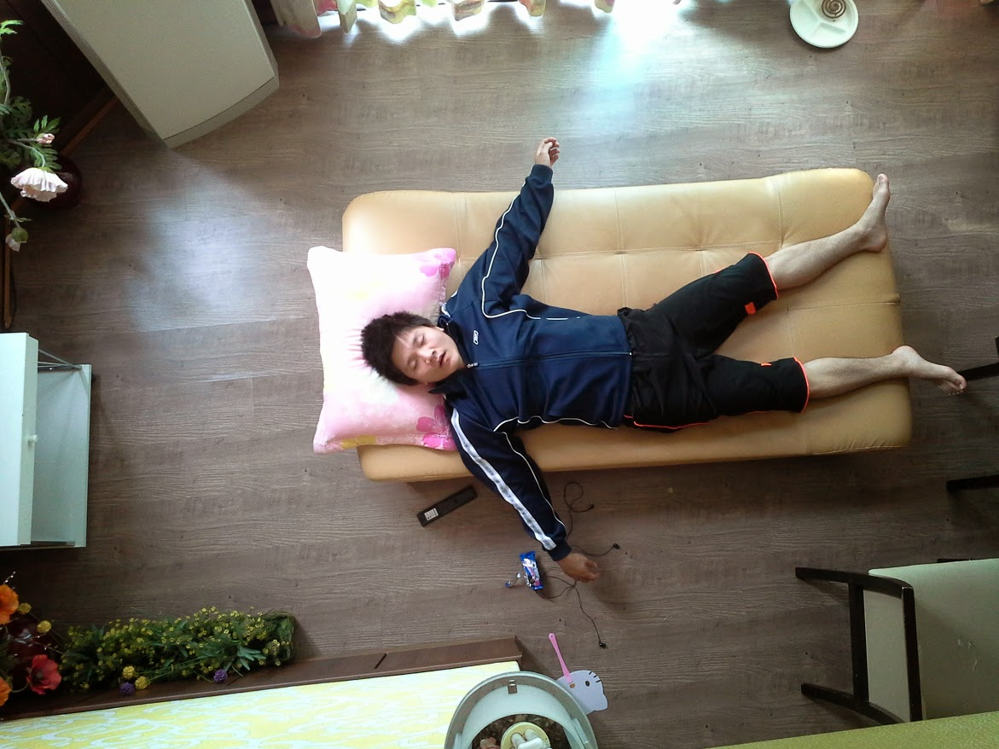

안미남을 소개한다.
안미남은 나 자신이며, 은평구에서도 변두리에 사는 개발자인 안미남은 코로나19 이전부터 재택근무를 하고싶었지만, 직장상사는 눈앞에서 일안하는 꼴을 못본다.
아침에 일어나면, 정신을 못 차린다.
사회적 거리두기를 위해한건 아니였지만.. 사회가 날 거리둘라고한다.
담배피러 나갈때 가끔 만나는 '그' 분과 눈인사를 나눈다.
맞다. 우리 부장님이다.
담배를 다폈으니 작업하기전에 커피를 마시기 시작한다.
커피는 일시작하기 전에 먹거나, 일하면서 생각날때 밖에나가 탁트인 회사앞 공원에서 몰래먹는다. 물론 사회적 거리두기를 하기 위함이다.
보통 오후 작업은 식후라 졸려서 잘못하지만, 코로나 19이후에는 더 못하겠다.
야구 매니아 답게 야구보면서 간식으로 홈런볼을 즐겨먹는다.
자기 전, 1분코딩 채널을 보며 잘준비를 한다.
일과를 마치고 티비로는 런닝맨, 스마트폰으로는 게임하며 잠자리에 든다.